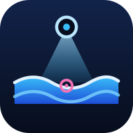
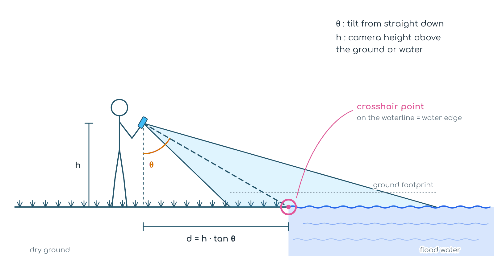
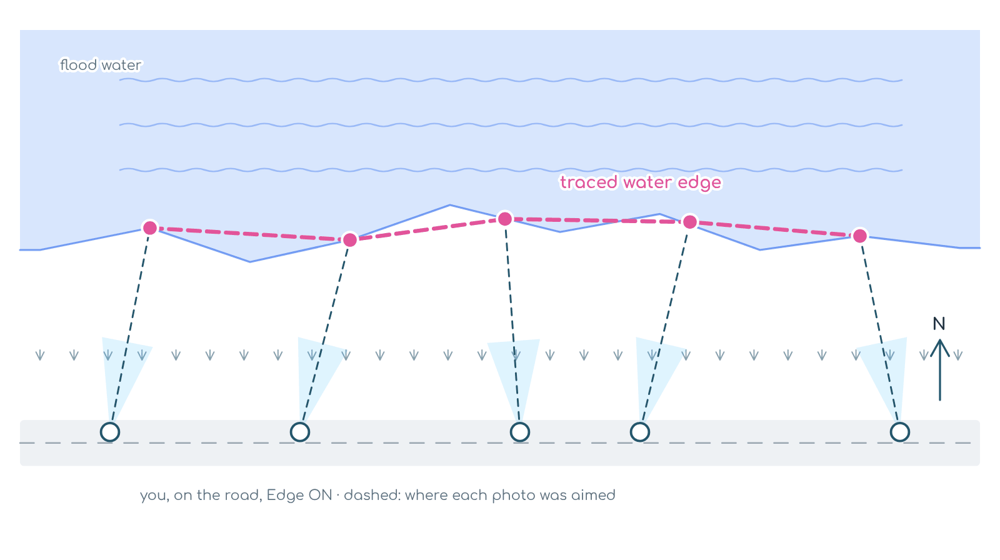
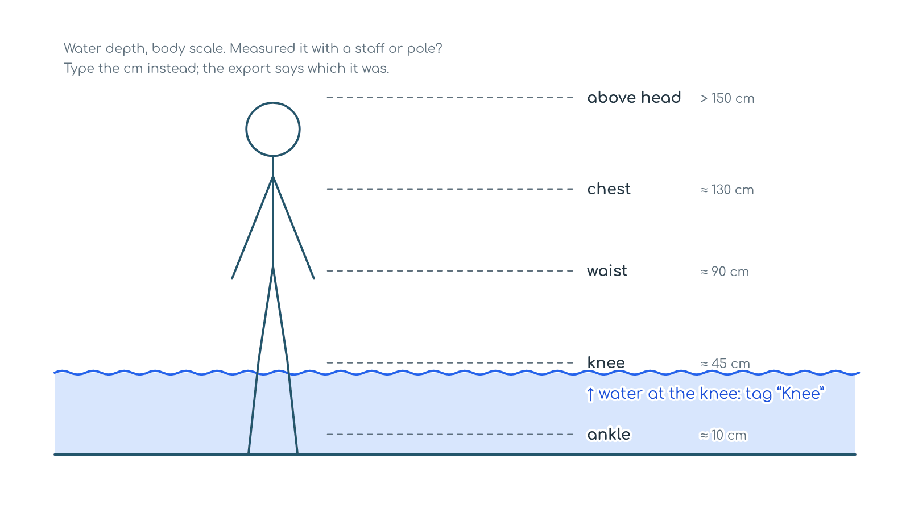

FloodView
Ground truth for flood maps, from where you stand.
Camera · GPS · Compassv1.1During + after floodWorks offlineDRR Day 2026
13 Oct 2026 International Day for Disaster Risk Reduction
We are pleased to announce FloodView on this year's DRR Day, themed Resilience Starts at Home. In a flood, the first people to see the water are the people at home. FloodView lets them record it as data that a flood map can be checked against.
Why it's needed. Satellite flood maps come fast, but they often miss water in built-up areas, under trees and beneath clouds, and are rarely checked on the ground. Field photos exist, but they sit in phones and chat groups without position or direction. FloodView turns each one into a mapped, labelled observation.
▸ Why it matters
- Checks the map. Points labelled flooded, waterlogged or dry show where a flood map is right and where it is wrong.
- Marks the edge safely. The crosshair records where the water starts, so nobody has to stand in it.
- Works when networks fail. Capture offline, keep full-size photos on the phone, and share one ZIP when the signal returns.
- Open by default. Free and open source. GeoJSON and CSV open in QGIS, with no account or server.
A field camera for flood ground truthing. One tap saves a geo-tagged photo labelled flooded, waterlogged or dry, with its look direction, ground footprint and the exact spot under the crosshair, so you can mark the waterline from dry ground. After the flood, it records flood marks and damage.
Stay safe. Never wade into moving water: 15 cm of fast water can knock an adult over, and 30 cm can carry a car away. The crosshair point is there so you can tag water without standing in it.
In the field
01
Open & allow
Tap “Grant Permissions & Continue” and allow camera, location and motion sensors.
02
Name the survey
Set the camera height above the ground, or above the water if you're in it, on a boat or on a bridge.
03
Wait for GPS
Stand in the open until the GPS button turns green. Direction off? Tap the compass and draw a figure-8.
04
Set the tags
Depth, flow, rising or receding, and what's flooded. They stay on until you change them.
05
Tap the class
FLOODED, WATERLOGGED or DRY: one tap saves the photo with that label.
06
Trace the edge
Switch 〰 Edge on and put the crosshair on the waterline. Walk the boundary from dry ground.
07
Fix on the spot
On the DATA tab, tap EDIT on any capture to change its class, tags, edge flag or note.
08
Export & share
Tap EXPORT ZIP, or SHARE ZIP straight to WhatsApp or Drive. Then open it in the Explorer.
After the flood
Pick After flood when you start a survey. The buttons change to:
📏
Flood mark
The water line left on walls and trees. Note its height above the ground.
🏚
Damage
What is damaged (house, road, bridge, crops, embankment, well, power line…) and how bad: minor, major or destroyed.
✅
Not flooded
Places that stayed dry. Just as useful for checking a flood map.
You can also note the mud left behind and how long the water stayed. Every point gets a simple was_flooded yes/no, so during- and after-flood surveys go on one map.
Capture geometry



The crosshair point is most reliable with the phone tilted 40–80° from straight down, the green band on the tilt bar. Each capture also stores its ± uncertainty. Look direction, tilt and footprint use the same sensor code as CropView.
Every capture carries
flood_class water_depth_class water_depth_cm flow level_trend flooded_land_cover water_edge heading_deg tilt_deg_from_nadir aim_lat aim_lon aim_uncertainty_m gps_accuracy_m
In the ZIP
images/ *_captures_points.geojson *_captures_footprints.geojson *_water_edge.geojson *_captures.csv
Filename
Survey_FV-ID_YYYYMMDDHHMMSS_lat_lon.jpg
Explorer
Map, review and export your ZIPs in the browser, on a phone or a desktop. Open the Explorer →
01
Load ZIPs
Drop one or more ZIPs on the map. Each survey gets its own colour. CropView ZIPs open too.
02
Read the map
Click a point to see its photo. Layers: footprints, crosshair points, water-edge trace, arrows, cones, walking path.
03
Colour & filter
Colour points by class, depth, flow, level trend or capture time. Hide a class, or show only edge points.
04
Browse & zoom photos
Open any photo full screen. Pinch, scroll or double-tap to zoom, and drag to look around. On phones, swipe for the next photo.
05
Review
Fix the class, depth or edge flag in the table, on the map or in the photo viewer. The original field labels stay beside your edits.
06
Export & resume
Export reviewed points, water edges or a CSV; the GeoJSON opens in QGIS. Reopen the same ZIPs later and your edits come back.
Photo viewer: ← → move · Space next · + − zoom · 0 fit · I info · Esc close
No network in the flood zone? Open the app once with internet and it then works offline. Photos are kept full-size on the phone, saved surveys can be resumed, and map tiles you've already viewed stay available. Add it to your home screen for a full-screen app.
Made by Somdeep Kundu with ❤️ at RuDRA Lab, C-TARA, IIT Bombay · Sibling of CropView · MIT License